해양공학기사 (2003-05-25 기출문제)
1과목: 해양학개론
1. 어느 하수천에 많은 양의 용존 유기물과 Fe가 존재한다. 이 하천수가 estuary를 지나면서 볼 수 있는 용존 유기 물질과 Fe의 변화는?
- Fe의 증가 및 용존 유기물질의 감소
- Fe의 증가 및 용존 유기물질의 증가
- Fe의 감소 및 용존 유기물질의 감소
- Fe의 감소 및 용존 유기물질의 불변
(정답률: 알수없음)

2. 수온 약층의 깊이가 가장 깊어질 때는?
- 봄
- 여름
- 가을
- 겨울
(정답률: 알수없음)
3. 역학 심도(dynamic depth)계산에 필요한 요소가 아닌 것은?
- 온도
- 염분
- 깊이
- 용존산소
(정답률: 알수없음)
4. 다음 분급도(sorting)중에서 가장 분급이 양호한 것은?
- 0.75
- 1.0
- 1.25
- 1.50
(정답률: 알수없음)
5. 해수 중 NO3--N 과 PO43-는 다음 중 어느 것에 속하는가?
- 생물 제한성분(Biolimiting constituent)
- 주요원소(Major element)
- 반응성원소(Reactive element)
- 보존성분(Conservative constituent)
(정답률: 알수없음)
6. 해양학에서 밀도(density)를 나타내는 방법 중 틀린 것은?
- σ = (ρs.t.p-1)×103
- σt = (ρs.t.o-1)×103
- σD = αdP
- α =2/ρ
(정답률: 알수없음)
7. 해수면에 있어서의 빛은 입사각이 커짐에 따라 투과율도 증가한다. 태양의 고도가 90도일 때 투과율이 85% 였다면 10도 일 때의 태양 광선의 반사율은?
- 2.0%
- 5.9%
- 34.9%
- 89.2%
(정답률: 알수없음)
8. 세계의 해구 중에서 평균 수심이 10,000m 이상인 곳은?
- 일본 해구
- 페루 해구
- 말리아나 해구
- 알류우샨 해구
(정답률: 알수없음)
9. 다음 중 석유의 부존가능성이 가장 적은 곳은?
- 대륙붕
- 대륙대
- 해구
- 대양대지
(정답률: 알수없음)
10. 중광물은 비중이 어느 정도의 값을 갖는 쇄설성 성분인가?
- 1 이하
- 1~1.5
- 1.5~2.5
- 2.5 이상
(정답률: 알수없음)
11. 해수중 탄산염은 여러가지 상태로 존재한다. 해양의 정상 pH(pH 8.1)조건하에서 가장 풍부한 것은?
- CO23-
- H2CO3
- CO32-
- HCO3-
(정답률: 알수없음)
12. 다음 중 대서양형 대륙주변부의 특징을 나타내는 것으로 적당하지 않은 것은?
- divergent
- Seismic
- Passive
- not a plate boundary
(정답률: 알수없음)
13. 우리나라 근해에서 가장 풍부한 점토 광물은?
- Kaolinite
- Chlorite
- Smectite
- illite
(정답률: 알수없음)
14. 다음에 열거한 해양에서 얻을 수 있는 에너지 중 양적으로 가장 큰 것은?
- 파랑
- 조석
- 표층해류
- 심층해류
(정답률: 알수없음)
15. 망간 단괴는 퇴적물 분류상 다음 어느 것에 속하는가?
- 육성기원 퇴적물
- 수성기원 퇴적물
- 우주기원 퇴적물
- 생물기원 퇴적물
(정답률: 알수없음)
16. 음파의 전달에 가장 영향을 주는 해수운동은?
- 표층해류
- 저층해류
- 표면파
- 내부파
(정답률: 알수없음)
17. 북반구의 잔잔한 바다에서 갑자기 강풍이 분후 멈추었을 때 생기는 해류의 방향은?
- 바람방향의 오른쪽
- 바람방향의 왼쪽
- 시계방향
- 반시계방향
(정답률: 알수없음)
18. 다음의 각항은 서로 공통적인 면을 가진 해류를 묶어 본것인데, 기술된 내용이 일정한 공통성을 나타내지 못한 것은?
- 쿠로시오, 만류, 페루해류, 북적도해류
- 쿠로시오, 캘리포니아해류, 카나디해류, 만류
- 북적도해류, 북태평양해류, 쿠로시오, 캘리포니아해류
- 캄챠카해류, 친조, 알류샨해류, 알라스카해류
(정답률: 알수없음)
19. 걸프 스트림(Gulf Stream)과 관계없는 것은?
- 쿠로시오와 성격이 유사하다.
- 더운 해수를 위도가 높은 지역으로 이동시킨다.
- 메안더링(meandering)현상을 수반하기도 한다.
- 적도류(Equatorial current)와 무관하다.
(정답률: 알수없음)
20. 북반구의 경우 바람 방향이 다음 중 어느 것 일 때 용승현상이 나타나는가?
- 해안을 오른쪽에 두고 해안에 평행하게 바람이 불어갈 때
- 해안을 왼쪽에 두고 해안에 평행하게 바람이 불어갈 때
- 육지에서 해양으로 바람이 불 때
- 해양에서 육지로 바람이 불 때
(정답률: 알수없음)
2과목: 해양수리학
21. 항만에서 고조의 높이를 추산하는 식이 맞는 것은? (단, a, b, c : 계수, V : 최대풍속, θ : 주풍향과 만의 축이 이루는 각도, h : 평균수심, △p : 기압저하량)
- △h=a△p+b(V cosθ )2+C
- △h=a△p+b(V cosθ )2/h1/2+C
- △h=a△p+bV2 cosθ +C
- △h=a△p+bV2 cosθ /h1/2 +C
(정답률: 알수없음)
22. 어느 해역의 기압이 주위의 기압보다 10hPa 하강하였을 때 수면의 상승량은 약 얼마인가? (단, 기압변동 이외의 조건은 정상상태로 가정한다.)
- 1cm
- 10cm
- 5cm
- 20cm
(정답률: 알수없음)
23. 반일 주조가 우세한 하구에서 담수의 유입율이 초당 1000m3 이며 조석프리즘은 18 × 107m3인 경우의 하구의 형태는?
- 완전혼합형
- 부분혼합형
- 성층형
- 3층 흐름형
(정답률: 알수없음)
24. 다음중 해저 물질의 이동 양식이 아닌 것은?
- 부유표사
- 비사
- 소류표사
- wash load
(정답률: 알수없음)
25. 해양구조물에 작용하는 파랑 하중의 특성을 가장 잘 나타내는 무차원수는?
- Frounde수
- Reynolds수
- Weber수
- Keulegan-Carpenter수
(정답률: 알수없음)
26. 수리모형실험에서 다음 중 기하학적 상사에 관련되는 물리량이 아닌 것은?
- 길이
- 시간
- 면적
- 체적
(정답률: 알수없음)
27. 부유사의 체적 농도가 0.01% 일 때 부유사의 농도는 몇 ppm이 되는가?
- 2.65 ppm
- 2650 ppm
- 26.5 ppm
- 265 ppm
(정답률: 알수없음)
28. 오일러(Euler)방법에 의한 해류관측이 아닌 것은?
- rotor형 유속계
- 음향 도플러 방식
- 전자기식 유량계
- 표류부표
(정답률: 알수없음)
29. 조석의 관측기록으로 부터 평균 해면을 산정하는 여러 방법 중 일 평균해면(daily mean sea level)을 구하는 방법이 아닌 것은?
- 관측기록을 조화분해하여 위상을 갖고 구한다.
- 매 24시간 또는 25시간 관측치를 평균한다.
- 매시간 관측치에 수치 휠터(filter)를 적용하여 구한다.
- 구적기(Planimeter)에 의한 관측 곡선 면적을 평균한다.
(정답률: 알수없음)
30. 유한 수심을 진행하는 평면파의 군속도(Cg)와 위상속도(Cp)와의 관계는?
- Cg/Cp = 0
- Cg/Cp = 0.5
- 0.5 < Cg/Cp < 1.0
- Cg/Cp = 1.0
(정답률: 알수없음)
31. 바다의 임의 점에서의 염분은 여러 물리적 과정에 의해서 시간적 변화를 보인다. 다음의 물리적 과정중 염분변화에 중요한 것은?
- 지구 자전과 해저 마찰력
- 이류작용(advection)과 난류 확산
- 분자확산
- 이류작용(advection)과 해저 마찰력
(정답률: 알수없음)
32. 조석잔차류(tidal residual flow)에 관한 설명중 맞는 것은?
- 바람, 파랑, 해류 등에 기인하는 항류 성분을 통칭한다.
- 지구자전의 효과에 의한 항류성분을 의미한다.
- 항류 중에서 해안, 해저 지형에 의한 조류의 비선형성에 기인하는 흐름 성분을 말한다.
- 조석에 의한 흐름을 뺀 흐름성분을 모두 합하여 조석잔차류라 한다.
(정답률: 알수없음)
33. 다음 중 확산계수의 차원은?
- L2T-1
- ML-1T-1
- ML2T-1
- ML-3
(정답률: 알수없음)
34. 10mm 간격을 두고 매끄러운 두 판이 수직으로 세워져 있다. 비중이 0.8인 기름이 아래로 흘러갈 때 Reynolds 수는? (단, 단위 폭당 유량 q=0.01m2/sec,점성 계수 μ =2× 10-3kg・sec/m2 이다.)
- 1224
- 204
- 408
- 612
(정답률: 알수없음)
35. 폭이 넓은 수심이 1.5m 하천에서의 바닥의 마찰속도는? (단, 에너지 구배는 1/1,600이다.)
- 4.8 cm/sec
- 9.6 cm/sec
- 1.9 m/sec
- 3.8 m/sec
(정답률: 알수없음)
36. 파랑의 굴절에 있어 굴절계수(Kr)를 올바르게 표시한 것은? (단, bo는 수심 ho에 대한 폭, b는 수심 h에 대한 폭이다.)
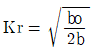
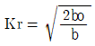
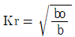
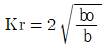
(정답률: 알수없음)
37. 하구(estuary)에서 하천의 유량과 유속이 증가하면 담수와 해수 사이의 혼합은 어떻게 변하는가?
- 증가한다.
- 변화가 없다.
- 감소한다.
- 증가할수도 감소할 수도 있다.
(정답률: 알수없음)
38. 해양에서 파랑을 관측할 때 파랑관측시간 간격 Δt를 0.5초로 하면 Nyquist 주파수는 몇 Hz인가?
- 0.5Hz
- 1Hz
- 2Hz
- 4Hz
(정답률: 알수없음)
39. 개수로의 유속계산에 쓰이는 Manning 공식의 조도 계수 n과 Chezy 공식의 유속계수 C와의 관계는? (단, R은 동수반경임)
- nC = R1/6
- nC2 = R1/6
- n2C = R1/3
- nC = R1/3
(정답률: 알수없음)
40. 불규칙파에 의한 해안구조물의 안정성에 대한 모형실험을 하고자 한다. 모형의 축척에는 어떠한 상사법칙에 따르는 것이 좋은가?
- Reynolds 상사법칙
- Froude 상사법칙
- Weber 상사법칙
- Cauchy 상사법칙
(정답률: 알수없음)
3과목: 해양구조공학
41. 실측자료가 없을 때 해양구조물의 설계파의 산정에는 기상자료를 이용한다. 이러한 파랑추산에서 꼭 필요한 기본자료들로 구성된 것은?
- 풍향, 풍속, 취송거리
- 풍향, 풍속, 취송시간
- 풍향, 취송거리, 취송시간
- 풍속, 취송거리, 취송시간
(정답률: 알수없음)
42. 사석구조물과 같은 경사식 해안구조물의 장점 중 옳은 것은?
- 반사파고 및 소상고(run-up height)가 크다.
- 투과파를 허용한다.
- 이용가능한 수역면적이 넓다.
- 연약지반에서도 쉽게 건설할 수 있다.
(정답률: 알수없음)
43. 그림과 같은 필렛(fillet)용접에서 목두께는?
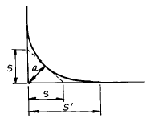
- a
- s
- s'
- s+s'
(정답률: 알수없음)
44. 해안침식방지를 위해 이안제를 건설할 경우 이안제의 길이와 높이, 개구부의 간격 및 이안제의 기능등에 관한 설명 중 옳은 것은? (단, 설치지점의 파장은 L이다.)
- 수심 10m 이상의 외해 쪽에 설치하여도 퇴사기능은 좋다.
- 쇄파대 부근에 설치할 경우 그 길이는 2-5L, 개구부 간격은 1L정도가 좋다.
- 이안제의 높이는 대조기 평균만조위에 파고를 더한 값으로 한다.
- 높이는 평균해면으로 부터 파고의 1/2을 더하고 길이는 1L로 한다.
(정답률: 알수없음)
45. 상자형 바지(barge)가 길이10m x 폭5m x 깊이2.5m 이고 중량이 25ton이다. 화물중량 50ton을 실을 경우 흘수는 얼마가 되는가? (단, 물의 밀도는 1,000kg/m3이다)
- 0.5m
- 1.0m
- 1.5m
- 2.0m
(정답률: 알수없음)
46. 다음중 가장 급경사면에서 생기는 쇄파의 형태는?
- Surging breaker
- Spilling breaker
- Plunging breaker
- Collapsing breaker
(정답률: 알수없음)
47. 다음과 같은 구조물을 허용응력 설계법으로 설계했을 때 구조물이 저항할 수 있는 최대 하중 p의 크기는? (단, 구조물의 허용휨응력은 270kg/cm2이고, 허용전단응력은 60kg/cm2이다)
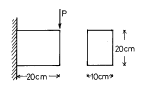
- 7000 kg
- 8000 kg
- 9000 kg
- 10000 kg
(정답률: 알수없음)
48. 그림과 같이 2척의 예인선(tugboat) A와 C가 바지(barge)를 끌고 있다. 로우프 2에 발생하는 인장력이 최소가 되기 위한 각 α 의 크기는?
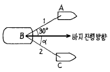
- 0°
- 30°
- 60°
- 90°
(정답률: 알수없음)
49. 유속이 V인 흐름에 놓여있는 원주형 물체의 직경이 D, 길이가 ℓ 이라 할 때, 항력계수가 CD, 유체 밀도가 ρ, 유체의 단위중량을 r, 중력가속도를 g라할 때 이 물체가 받는 항력은?
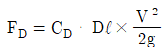
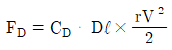
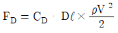
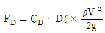
(정답률: 알수없음)
50. 다음 중 콘크리이트 해양구조물은?
- Hondo
- Cognac
- Condeep
- Hutton
(정답률: 알수없음)
51. 다음 중 보, 트러스, 라멘에 공통적으로 적용할 수 있는 변위(처짐) 계산 방법은?
- 뉴마크(Newmark)의 방법
- 단위하중법(Unit-load method)
- Williot-Mohr의 도해법
- 탄성하중법(Elastic-load method)
(정답률: 알수없음)
52. 안벽의 구조양식이 아닌 것은?
- 선반식
- 널말뚝식
- 자기승강형식
- 중력식
(정답률: 알수없음)
53. 동일한 휨모우먼트가 작용할때 단면적의 비가 1:4인 원형 단면보에 발생하는 최대 휨응력의 비는?
- 8:1
- 4:1
- 2:1
- 1:1
(정답률: 알수없음)
54. 해저의 기초지반이 튼튼하고 수심이 10m 내외 정도이며, 수면 변화가 너무 크지 않은 곳에 적합한 방파제는?
- 부방파제
- 사석제
- 직립제
- 혼성제
(정답률: 알수없음)
55. 수직원주의 직경이 D, 파장이 L인 경우 파력계산에 Morison식을 사용할 수 있는 범위는?
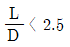
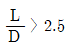
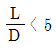
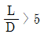
(정답률: 알수없음)
56. 해안구조물과 파랑의 상호작용에 의한 월파량 변화의 중요한 요인이 아닌 것은?
- 호안의 설치위치와 단면현상
- 조류 및 해저 지질
- 바람과 마루높이 및 폭
- 기초공의 형상과 소파블록
(정답률: 알수없음)
57. 다음과 같은 구조물의 부정정차수를 구하면?
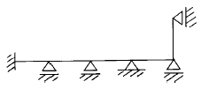
- 3차
- 6차
- 9차
- 12차
(정답률: 알수없음)
58. 원형단면의 기둥에서 단면의 반지름이 r일때 핵심구역(cori area)의 면적은?
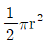
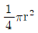
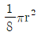
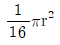
(정답률: 알수없음)
59. 선박의 갑판에서 100 ton의 하중을 중심선에서 횡방향으로 10m 움직였을 때 선박이 1/20 도 기울어졌다. 경심고가 25m일 때 선박의 배수 중량은?
- 1000 ton
- 2500 ton
- 5000 ton
- 8000 ton
(정답률: 알수없음)
60. 다음과 같은 구조물에 100t 의 인장력이 작용될 때 사용할 수 있는 구조물의 최소 단면적의 크기를 허용응력 설계법에 의해 설계한 값은? (단, 구조물의 항복응력은 3t/cm2이고, 안전율은 4로 한다.)
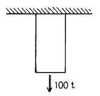
- 125.0cm2
- 133.3cm2
- 150.0cm2
- 300.0cm2
(정답률: 알수없음)
4과목: 측량학
61. 다음 조석현상에 관한 사항 중 틀린 것은?
- 해수면은 조석에 따라 하루 두번씩 승강을 되풀이한다.
- 해수면이 높을 때를 만조라 한다.
- 해수면이 낮을 때를 간조라 한다.
- 밀물과 썰물의 시간차를 교차라 한다.
(정답률: 알수없음)
62. 다음 중 수평위치 결정에 관한 측량이 아닌 것은?
- 수준 측량
- 삼각측량
- 다각측량
- 삼변측량
(정답률: 알수없음)
63. 일반적으로 중.단거리 용으로 사용되며 두개의 육상 무선국으로 부터의 전파도달 시간에 의하여 선위를 결정하는 방식은?
- 거리방위법
- 원호방식
- 쌍곡선방식
- 측거방식
(정답률: 알수없음)
64. 수중에서 음파속도에 직접적인 영향을 미치는 것이 아닌 것은?
- 온도
- 염분
- 마찰
- 압력
(정답률: 알수없음)
65. 다음 중 우수한 상태의 해저 영상을 얻기 위해 고려할 사항이 아닌 것은?
- 보정렌즈 및 고유 필터를 가질 것
- 가능한 고조시에 촬영할 것
- 원색 필름은 즉시 현상할 것
- 촬영시각에 유의할 것
(정답률: 알수없음)
66. 음향 측심기록으로 부터 실제 수심을 구하기 위하여 반적으로 행하는 보정이 아닌 것은?
- 음속도보정
- 흘수보정
- 조고보정
- 조석보정
(정답률: 알수없음)
67. 해상위치 결정법중 그림과 같이 해상 구점에서 육분의에 의하여 육상의 두 기지점에 대한 각을 관측하면, 위치선은 그 점들을 지나는 원이 되며, 그 점들에 대한 각을 측하여 두 원호의 교점으로 위치를 결정하는 방식은?
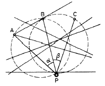
- 거리관측법
- 거리일각법
- 해상방위관측법
- 삼점양각법
(정답률: 알수없음)
68. 도화기에서 사진을 바르게 장치하여 촬영시와 같은 상태 재연시키기 위해서 K, ρ ,ω, by, bz의 표정인자로 조정하는 표정은?
- 내부표정
- 상호표정
- 대지표정
- 접합표정
(정답률: 알수없음)
69. 축척 1:5,000의 지형도에서 계곡선의 간격은?
- 50m
- 225m
- 25m
- 125m
(정답률: 알수없음)
70. 항공사진의 특수 3점이 아닌 것은?
- 연직점
- 등각점
- 부점
- 주점
(정답률: 알수없음)
71. 다음 중 측량원도에 기재되는 사항이 아닌 것은?
- 원점
- 자오선
- 등심선
- 토양
(정답률: 알수없음)
72. 측심선 간격을 결정하는 식 중 옳은 것은 어느 것인가? (단, I: 측심선 간격, D: 미측심폭, A: 단위측위 정도에 대한 편의량(m), B: 측량선의 계획 측심선에 대한 사행량(m), C: 측량선 1척의 음향 도달폭(m))
- I=C+D-(A+B)
- I=C+D+(A+B)
- I=C+D-(A-B)
- I=C-D-(A+B)
(정답률: 알수없음)
73. 해저지질의 미세구조, 지층의 상황, 단층의 상황을 파악하는데 사용되는 탐사법은?
- 중력탐사법
- 지자기탐사법
- 음파탐사법
- 레저탐사법
(정답률: 알수없음)
74. 사진 촬영계획에 있어서 축적을 결정하는 다음 요소 중 우선 순위가 가장 낮은 것은?
- 지도의 축적 및 등고선
- 도화기의 성능 및 정확도
- 비행기의 고도
- 지상기준점의 배치상태
(정답률: 알수없음)
75. 점장도법의 설명으로 부적당한 것은?
- 정각도법으로 항정선은 모두 직선으로 표시된다.
- 지구상의 방위는 도상에 정확히 표시된다.
- 위도가 서로 다르면 축척이 변화한다.
- 이 도법은 고위도(70° )이상 지역의 항해에 적합하다.
(정답률: 알수없음)
76. 촛점거리 190mm, 비행고도 3800m, 사진크기가 23 × 23cm일 때 종중복이 60%라면 이 때의 기선장은?
- 1430m
- 1580m
- 1690m
- 1840m
(정답률: 알수없음)
77. 다음 중 개방 다각측량에서 많이 사용되는 각 관측법은?
- 편각법
- 교각법
- 부전법
- 반전법
(정답률: 알수없음)
78. 다음 중 연안수심측량의 수심과 측심선 간격에 대한 사항 중 틀린 것은?
- 수심 10m - 측심선 간격 200m
- 수심 50m - 측심선 간격 300m
- 수심 100m - 측심선 간격 500m
- 수심 150m - 측심선 간격 700m
(정답률: 알수없음)
79. 다음 중 해상위치측량의 방법에 속하지 않은 것은?
- 지자기에 의한 방법
- 전자파에 의한 방법
- 인공위성에 의한 방법
- 광학기기기에 의한 방법
(정답률: 알수없음)
80. 경사면을 따라 80m의 거리를 관측한 경우, 수평거리를 구하기 위해서 실시한 경사보정량이 3.5㎝일 때의 양단 고저차는?
- 3.85m
- 2.37m
- 4.31m
- 3.83m
(정답률: 알수없음)
5과목: 재료공학
81. 복수의 소재를 조합 또는 결합시켜 각종 재료를 복합화 하는 목적에 해당되지 않는 것은?
- 성형성, 가공성, 경제성등의 개선
- 역학적 성질의 개선
- 내구성등과 같은 물성의 개선
- 재료시험법의 개선
(정답률: 알수없음)
82. 아래 그림과 같은 I형 beam에서 최대 전단응력이 발생하는 곳은?
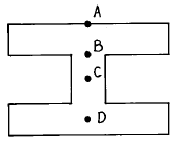
- A
- B
- C
- D
(정답률: 알수없음)
83. 다음 중 샬피(Charpy)충격시험에 필요한 사항이 아닌 것은?
- 해머의 무게
- 축중심으로 부터 해머의 중심까지의 거리
- 노치(NOtch)부의 원래의 단면적
- 시험편의 중량
(정답률: 알수없음)
84. 강재(鋼材)의 Mill sheet(검사증명서)에 기록되는 사항이 아닌 것은?
- 열처리
- 인장시험
- 충격시험
- 화학성분
(정답률: 알수없음)
85. 콘크리트의 배합설계에서 단위수량이 150kg, 단위 시멘트량이 300kg이다. 물시멘트비(W/C)는?
- 40%
- 50%
- 100%
- 200%
(정답률: 알수없음)
86. 평면응력상태에서 모아의 응력원의 설명 중 맞는 것은?
- 최대전단응력의 크기는 모아의 응력원의 반지름과 같다.
- 최소수직응력은 모아의 응력원의 반지름과 같다.
- 모아의 응력원이 반지름은 최대 및 최소수직응력의 합의 반과 같다.
- 최대수직응력은 ø =0° 에서 발생하며 그 크기는 σx와 같다.
(정답률: 알수없음)
87. 목재의 방부법에 관한 설명 중 잘못된 것은?
- 목재의 표면을 3-10mm정도 태워서 탄화시키는 방법은 비용이 작게들며 처리가 쉬워 널리 쓰인다.
- 습기나 균류, 충류등의 침투를 막기위해 표면을 Paint, creosote, asphalt등으로 도포하는 방법은 작업이 쉽다.
- 목재에 크레오소트, 염화아연, 유산동, 염화제2수은 등을 주입하는 방법은 강재의 부식을 막아준다.
- 목재의 방부법에는 목재의 표면을 처리하는 방법과 방부제를 목재에 주입하는 방법 등이 있다.
(정답률: 알수없음)
88. 포틀란트 시멘트의 성분 중 제일 많이 함유되고 있는 것은?
- 실리카
- 알루미나
- 석회석
- 산화철
(정답률: 알수없음)
89. 고온에서 주철을 매우 약하게 하며 주조할 때 균열 발생의 원인이 되는것은?
- 규소
- 유황
- 인
- 탄소
(정답률: 알수없음)
90. 보통 백주철로 된 것을 열처리하여 시멘타이트를 철과 흑연으로 분해하여 회주철보다 단조성이 있게한 주철을 무엇이라고 하는가?
- 가단주철
- 칠드주철
- 백주철
- 구상흑연주철
(정답률: 알수없음)
91. 해안 공사용으로 많이 쓰이는 강널말뚝(Steel sheet pile)의 단면형상으로 사용되지 않는 것은?
- Z형 단면
- B형 단면
- U형 단면
- 파형 단면
(정답률: 알수없음)
92. 금속재료의 인장시험으로 부터 구할 수 있는 곡선은?
- 톨크 - 비틀림각
- 응력 - 반복회수
- 마모량 - 마모거리
- 응력 - 변형곡선
(정답률: 알수없음)
93. 다음 재료시험 중에서 만능시험기를 쓰는 것은?
- 인장시험
- 충격시험
- 비틀림시험
- 경도시험
(정답률: 알수없음)
94. 강철재 녹방지용 페인트에 대한 성질 중 틀린 것은?
- 습기에 대해서 침투성이어야 할 것
- 될 수 있는한 공기도 투과시키지 않는 것
- 강철재에 화학적 작용이 미치지 않는 것
- 충분한 탄력성이 있으며 견고도가 크고 마찰 충격 등에 감당할 수 있어야 한다.
(정답률: 알수없음)
95. 다음은 강의 제조법에 따른 분류이다. 잘못된 것은?
- 평로법
- 베쎄머(Bessemer)법
- 도가니법
- 베젤(Bethel)법
(정답률: 알수없음)
96. 강재를 굴곡시험할 때 굴곡각도는 얼마 이하이어야 하는가? (단, 구부릴 때 삽입물을 넣는 경우이다.)
- 90°
- 135°
- 180°
- 270°
(정답률: 알수없음)
97. 다음 중 캐비테이션 부식의 방지 방법으로 옳지 않은것은?
- 수압의 차이가 최소가 되도록 설계한다.
- 내식성이 강한 재료를 설계한다.
- 재료의 표면을 불균일하게 하여 기포를 우선적으로 생기게 한다.
- 고무 등으로 금속부분을 피복하여 부식을 방지한다.
(정답률: 알수없음)
98. 철근, 콘크리트 재료에서 SBD 24의 허용응력은 다음 중 어느 것인가?
- 1200 kg/cm2
- 1300 kg/cm2
- 2000 kg/cm2
- 2400 kg/cm2
(정답률: 알수없음)
99. 다음은 재료의 변형에 관한 사항이다. 틀린 것은?
- 물체에 하중이 작용할 때 모양 및 크기의 변화를 일으킨다.
- 원래의 치수와 비교한 비를 말한다.
- 압축, 분리 또는 미끄럼에 저항하는 힘이 물질 내부에 생긴다.
- 차원을 갖지 않는다.
(정답률: 알수없음)
100. 다음중 물과 시멘트 비(W/C, %)를 가장 높게 취해야 할 해양 구조물의 위치는?
- 파랑과 파랑에 의한 물방울을 받는 부분
- 조석의 간만작용, 해수 등으로 씻기는 부분
- 항상 해중(海中)에 있는 부분
- 담수와 해수가 만나는 부분
(정답률: 알수없음)